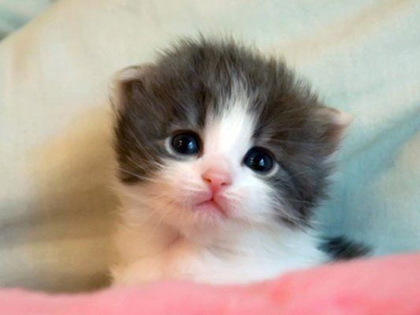

Felpudo
Si quieres adoptar a Felpudo, llena el siguiente formulario

Rizos
Si quieres adoptar a Rizos, llena el siguiente formulario
Pelusa
Si quieres adoptar a Pelusa, llena el siguiente formulario
Tiger
Si quieres adoptar a Tiger, llena el siguiente formulario
Amoroso
Si quieres adoptar a Amoroso, llena el siguiente formulario